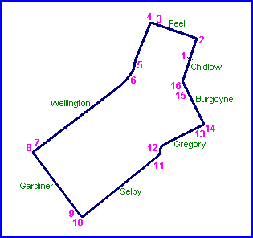
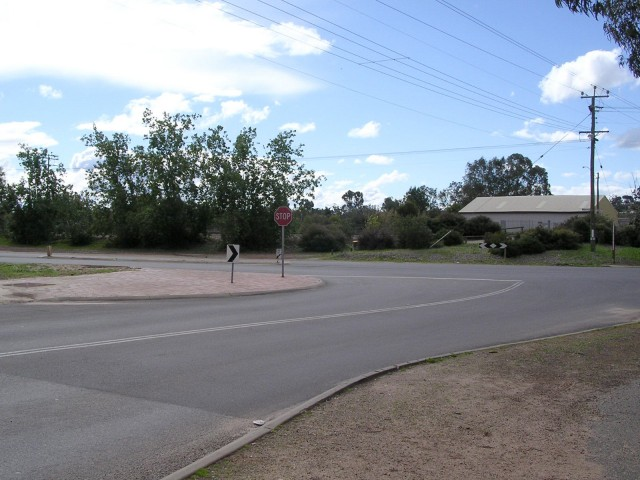
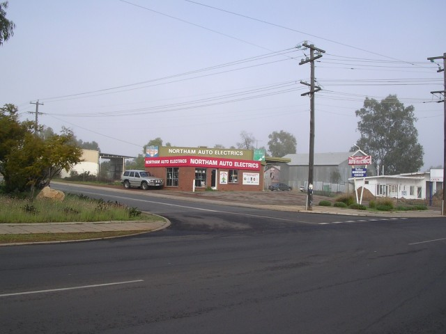
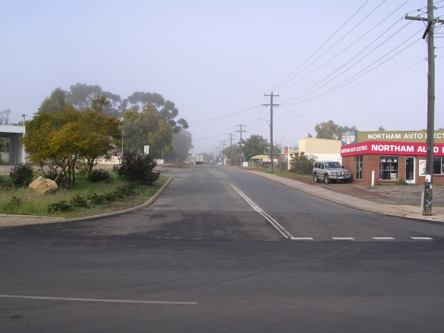
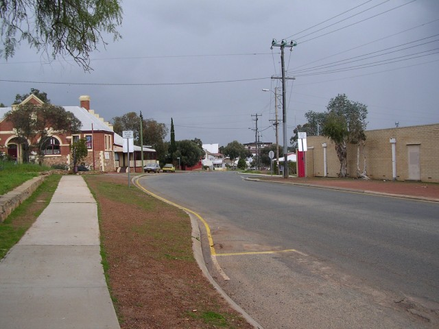
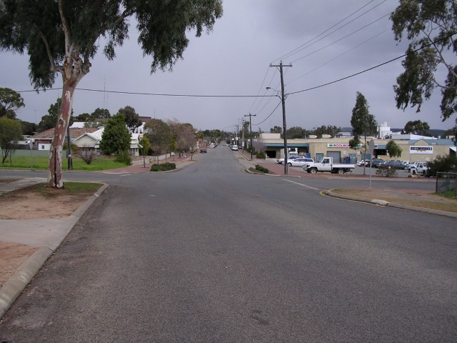
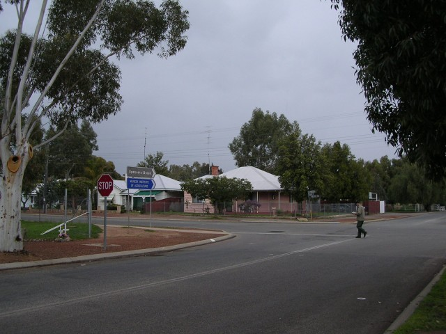
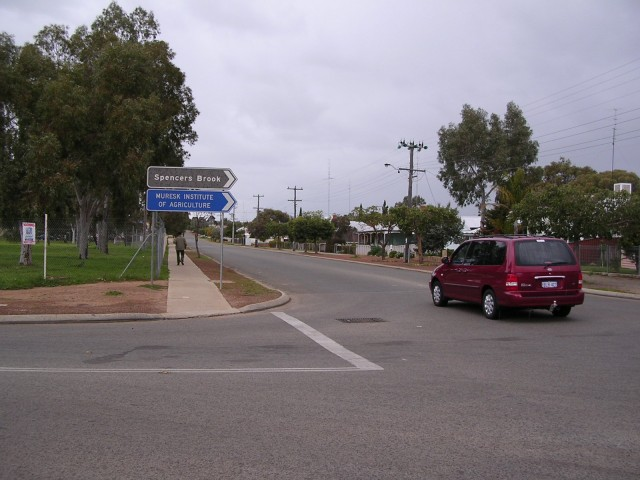

1 - Start area on Chidlow Street
Northam (Town Circuit) - Chidlow via Wellington to Gardiner
|| Contents || Chidlow / Wellington / Gardiner | Selby / Gregory / Burgoyne / Gardiner || Home ||

Numbers on the map represent the location where the photographs were taken. Scroll
down to view the photographs.
Return to racingcircuits.net's Photo Archive Main Index
1 - Start area on Chidlow Street

2 - Left turn into Peel Tce.

3 - Entry of the left turn into Wellington

4 - Exit of the left turn into Wellington

5 - Wellington Street

6 - Wellington Street

7 - Entry of the left turn into Gardiner
Street.

8 - Exit of the left turn into Gardiner
Street.
Photographs and Text ©Neil Fackerell. Reproduced here with kind permission.